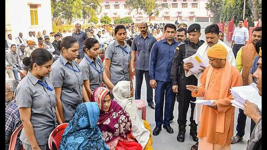
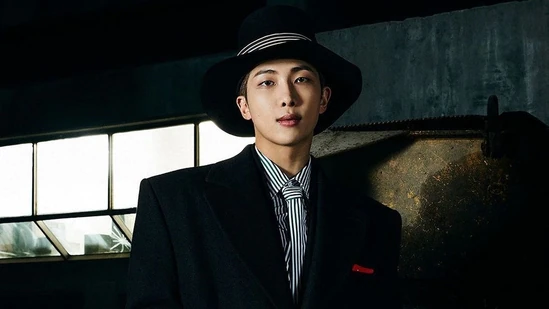
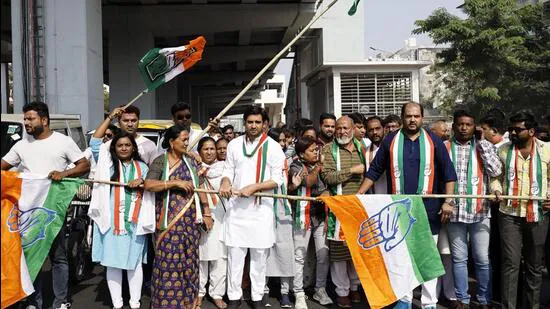
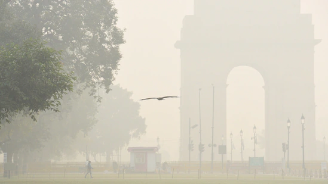
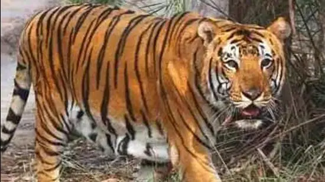
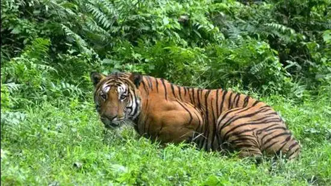

US President Joe Biden and his Chinese counterpart Xi Jinping agreed in talks Monday that nuclear weapons should never be used.

Those suffering from serious illnesses will be given all possible help. The government will provide funds to the needy immediately after receiving estimates, says CM
Here is the list of the best Kent vacuum cleaners with specifications, pros and cons, and how to pick the best one.
BTS member RM will be making his much-awaited solo debut in December with the release of Indigo, his first official work as a solo artist.
The World Meteorological Organisation (EMO) released its State of Climate in Asia 2021 report, which revealed the damage caused by weather and water-related hazards across the continent
The appointment of zonal observers comes shortly after the Congress announced its fourth list of nine candidates for the Gujarat polls
Ghaziabad fared better in the first half of November this year as the average air quality index (AQI) levels have remained on the lower side compared to the last six years with the least number of “severe” days during the first thirteen days of the current month.
The chief minister insisted that it was necessary to maintain a balance in nature for conservation of wildlife and expressed his gratitude towards people for supporting the cause.

Alok Kumar Srivastava, the head of the pharmacology department at Bhopal’s Gandhi Medical College, said it was not uncommon for them to get cases of steroid consumption for such competitive tests
The DFO said the victim’s family will be given financial assistance of ₹four lakh by the forest department
Police said the 11-year-old boy was playing outside his house on Tuesday evening when he appears to have been abducted.
The tiger dragged the girl into the forest while she was cutting paddy along with her grandmother and sisters in an agricultural field
With Rohit Sharma already 35 and the next T20 World Cup two years away, this certainly in the time for a change in guard, feels a former India pacer. He reckons either Hardik Pandya or Rishabh Pant can take over the command of the team and usher India's T20 team into a new era.